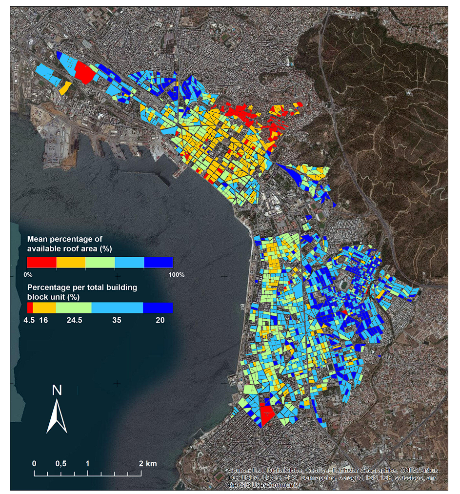
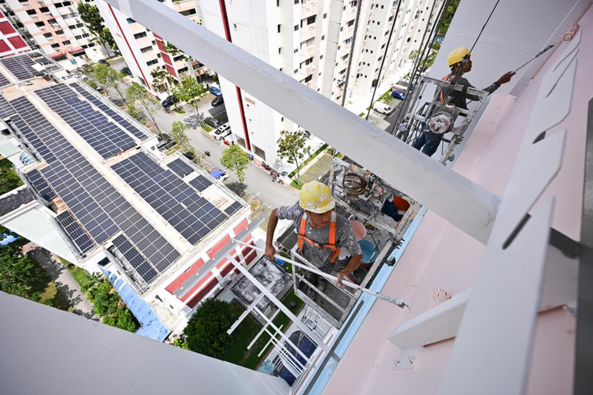

4 Earth Oberservation and Implications on Policy
4.1 Case Study: The Singapore Green Plan 2030
This week of Remote Sensing covers the idea of how remote sensing can be used to inform policies such as urban planning, resource allocation, or disaster mitigation/adaptation. One important lesson that I took away from the session is how Andy mentioned that many of the remote sensing papers did all the complicated analysis and data wrangling, but an equally important section on policy implications is missing. Linking results from analysis to real world implications such as where initiatives should be targetting or how resources should be allocated is a crucial part of a study, not just identifying challenges and phenomenon using remote sensing.
The case study I chose this week is Singapore’s Green Plan 2030. It is the country’s national sustainability movement, aimed to advance climate targets and achieve net zero emissions by 2050. The country currently faces several climate related issues including rising sea levels threatening coasts, rising temperatures in already hot and humid tropical climate, and increased green house gas emissions. The green plan is a joint initiative by five different ministries aimed to address these issues, achieve goals set in the 2016 Paris Agreement of net zero emissions by 2050.
The goals and targets are categorised into 5 pillars as show below:
| Pillar | Example Goals |
|---|---|
| City in Nature |
|
| Sustainable Living |
|
| Energy Reset |
|
| Green Economy |
|
| Resilient Future |
|
4.2 Applications
City in Nature
There are many goals relating to increasing areas of green space including parks and planting more trees, but the key question is where should new green spaces be placed across the island state? Remote sensing can potentially provide an accurate assessment of Land-Use Land Cover (LULC) classification which can help evaluate the locations where urban green space is required. By analyzing LULC data, planners can evaluate existing urban landscapes, identify areas lacking green spaces, and prioritize locations where additional parks or tree planting would have the most impact. For example, Bai et al. (2022) developed an urban green space planning evaluation tool based on ecosystem services provision from Land-Use Land Cover to guide the new development of Fengdong New City, balancing residents’ outdoor recreation needs with the benefits of ecosystem services including rivers, forests and greenspace. Using the tool, an ecological corridor was suggested along key ecological nodes within the new town. Similarly, using LULC data to balance new housing developments and retaining green spaces can be a massive advancement towards a sustainable neighbourhood.
Energy Reset
The high demand of energy use in Singapore’s buildings is also an urgent issue that requires different innovation and technologies to solve. Due to its tropical climate and humidity, coupled with effects of Urban Heat Island (UHI), buildings require large amounts of energy to cool residents and the inhabitants. Reducing energy use through various solutions such as green roofs, solar panels, or even reflective paints can help reduce ambient temperatures and increase thermal comfort for residents. Remote sensing can help assess suitability for green roof and solar panels installations, or identify areas suffering from extreme heat risks, and help deploy more resources to actively cool buildings down, thereby reducing energy use in buildings. Karteris et al. (2016) used very high resolution satellite images to assess green roof potential in Thessaloniki, Northern Greece, and modelled the benefits of a wide area green roof implementation plan across the entire city. The authors found that green roof implementation could lead to a reduction of cooling consumption by 16% and increase rainwater retention by 45%.
 Mean percentage available roof for green roof installation obtained from analysis of satellite imagery. Source: Karteris et al. (2016)
The example demonstrates how remote sensing enables large-scale assessments of green roof feasibility, taking into account factors such as building characteristics (roof slope etc.) , thermal hotspots, and potential cost savings. By providing a data-driven approach, remote sensing can provide a feasible and realistic green roof implementation plan targeting areas where cost-savings can be the highest - all while using open-source data and not expending manpower/labour to check individual roofs for feasibility.
4.3 Reflections
Singapore has a highly ambitious plan which aims to achieve coverage over a range of climate and sustainable development agendas from waste reduction to protection of the coast lines. Although these goals and policies are publicly available online, there is a lack of information of how these goals are going to be carried out, including locations of how certain policies is carried out. Remote sensing could provide data-driven tools to analyse the most suitable locations where schemes can be implemented.
Fortunately, some of the applications of remote sensing has already been rolled out in Singapore. Housing Development Board (HDB), a government board under the Ministry of National Development (MND) has recently announced that heat-resistant paint will be rolled out to all HDB estates following a 2021 pilot study in Tampines, a resident town in East Singapore. Tampines was selected as “HDB’s analysis of satellite images …. showed that the town has a higher average land surface temperature compared to other towns” (HDB, 2021). The new paint is expected to reduce ambient temperatures up to 2 deg C, which is a major improvement to thermal comfort.
 Very recent rollout of heat-resistant paint in HDB housing estates. Source: The Strait Times, 2025]
Finally, my final note for the Singapore Green Plan 2030 is that although it is jointly delivered by 5 different ministries, the work seems to be very isolated within each ministry and individual goals are delivered in silo. Even within each ministry, different organisations are working on individual sustainable goals - for example National Parks is in charge of all urban greening projects/schemes, including parks planning and tree planting. On the other hand, waste reduction is solely delivered by the Ministry of Sustainability and Environment.
However, climate and sustainability issues are often interdisciplinary in nature; they require cross collaborations between ministries and a comprehensive plan tackling the problem from different angles. Remote sensing may a potential tool and platform where open source information and data can be shared across multiple ministries, enhancing collaborations and increasing transparency of policy implementation as well.
4.4 References
Bai, H., Li, Z., Guo, H., Chen, H. and Luo, P., 2022. Urban green space planning based on remote sensing and geographic information systems. Remote Sensing, 14(17), p.4213.
Gov.sg, n.d. The Singapore Green Plan. Obtained from https://www.greenplan.gov.sg/
Karteris, M., Theodoridou, I., Mallinis, G., Tsiros, E. and Karteris, A., 2016. Towards a green sustainable strategy for Mediterranean cities: Assessing the benefits of large-scale green roofs implementation in Thessaloniki, Northern Greece, using environmental modelling, GIS and very high spatial resolution remote sensing data. Renewable and Sustainable Energy Reviews, 58, pp.510-525.
The Straits Times, 2025. Heat-reflective paint initiative to be rolled out to all HDB estates by 2030. Obtained from https://www.straitstimes.com/singapore/housing/heat-reflective-paint-initiative-to-be-rolled-out-to-all-hdb-estates-by-2030